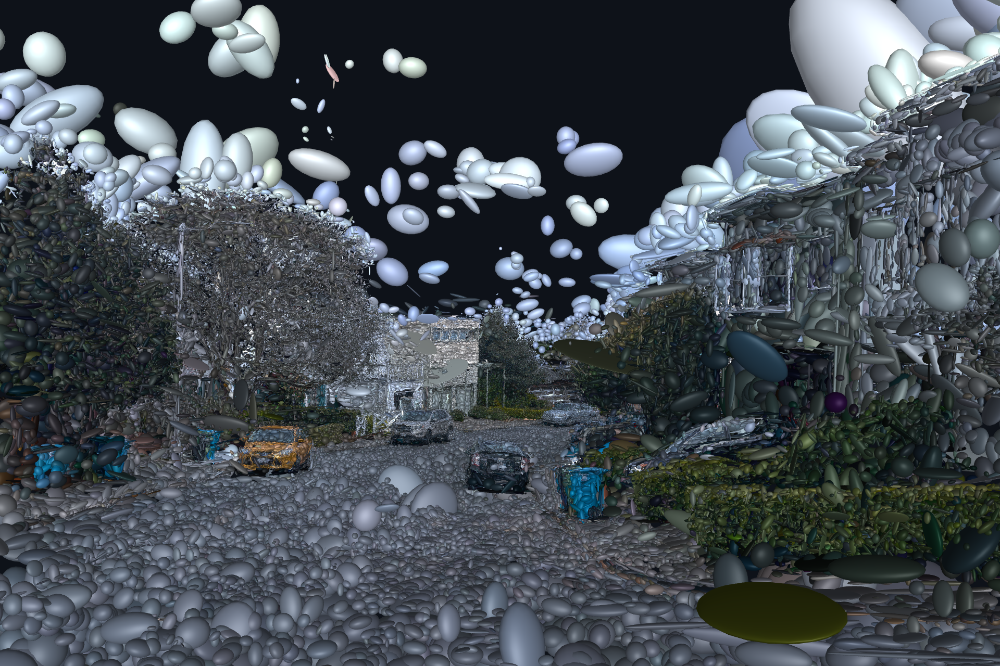
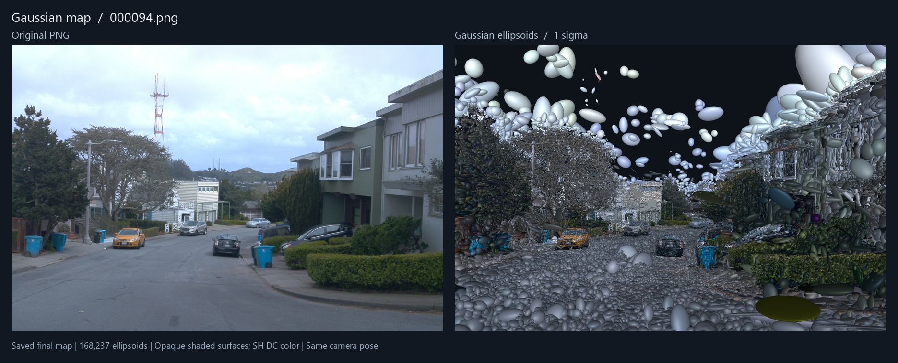

从单目图像，
重建三维世界。
让几何跟踪与高斯建图协同工作。
面向室外场景，探索从连续图像到相机轨迹与三维场景地图的完整过程。

01 / THE METHOD
从二维观测，到三维表达。
以特征构建几何关系，以深度引导高斯采样，
在在线建图中持续优化位姿与地图。
为三维地图建立几何起点。
使用 CLIDD 特征建立跨帧对应，通过 RANSAC / PnP 与 mini-BA 估计初始位姿。8 个 bootstrap 关键帧共同构成初始化窗口，随后进入高斯建图。
02 / INSIDE THE SCENE
看见场景的另一种表达。
从图像、几何到深度，
观察同一个街道场景的不同表示。

图示来自已保存的地图文件；地图运行来源未核验，不作为本方法的重建质量结论。原图与椭球视图不保证像素级对齐。
03 / EXPERIMENT RECORDS
让实验记录可供检查。
当前 Waymo 与 KITTI 实验汇总。
指标按片段等权平均，保留各自的评测语义。
| 数据集 / Dataset | 片段数 | ATE m ↓ | PSNR dB ↑ | SSIM ↑ | LPIPS ↓ | Time s ↓ |
|---|---|---|---|---|---|---|
| Waymo Outdoor driving | 9 | 0.622 | 27.42 | 0.868 | 0.219 | 174.64 |
| KITTI Visual odometry | 8 | 1.609 | 18.97 | 0.635 | 0.315 | 158.18 |
↳ 记录日期 2026.11.09 · 实验硬件 RTX 4090。当前各方法的评测帧、LPIPS 配置与计时范围尚未完全统一；这里展示本项目已有记录，不作统一基准排名。
下载数据与说明 ↓两个阶段，分别留存。
输出前端 mini-BA 与在线建图的关键帧轨迹。ATE 以关键帧 GT 作 Sim(3) 对齐后统计，GT 不参与跟踪与建图。
在留出帧上评测图像。
PSNR、SSIM、LPIPS 统计由 --test_hold 选中的评测帧；缺少 GT 时仍输出原始轨迹，ATE 留空。
四种数据读取入口。
提供 Waymo、KITTI、DL3DV 与 TUM loader，可按序列运行，也可使用批量脚本汇总输出。
04 / GET STARTED
从一个序列开始。
在 Linux + CUDA 环境中准备数据与模型权重，
运行独立入口 slam.py。
- 01
安装匹配 CUDA 的 PyTorch 与 CuPy，以及
requirements.txt中的依赖。 - 02
准备 CLIDD S64、Depth Anything V2 权重，并编译项目中的 CUDA 扩展。
- 03
选择数据集，把示例中的
/path/to/替换为实际数据路径。
# KITTI 07 · 左彩色相机 P2
python slam.py \
-s /path/to/KITTI/07 \
--dataset_type kitti \
--kitti_camera 2 \
--test_hold 8 \
--viewer_mode none \
-m results/kitti_07输入为已校正的 pinhole 图像；每个序列读取自己的 calib.txt。
BUILT ON RESEARCH
站在已有研究的基础上。
项目使用 CLIDD、Depth Anything V2 和 3D Gaussian Splatting 相关组件。代码使用遵循仓库及上游组件各自的许可证。